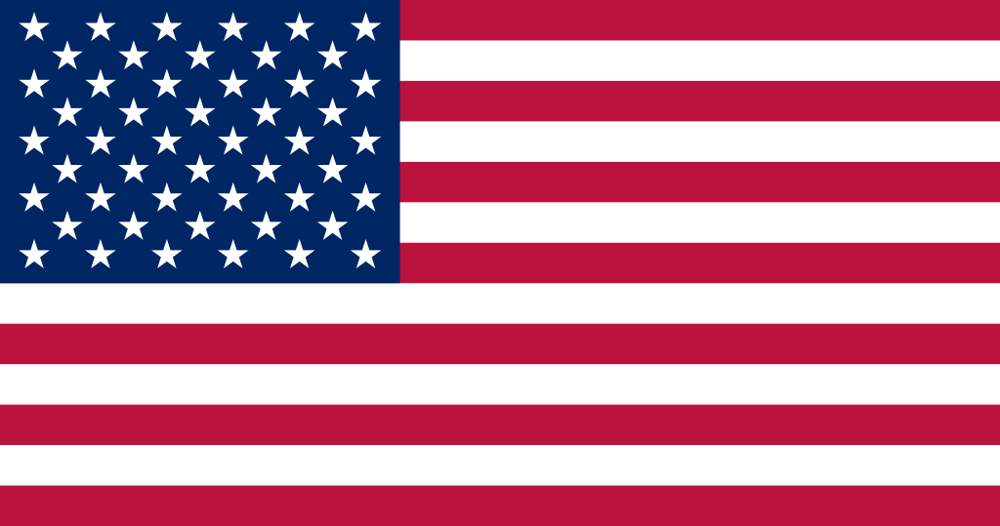
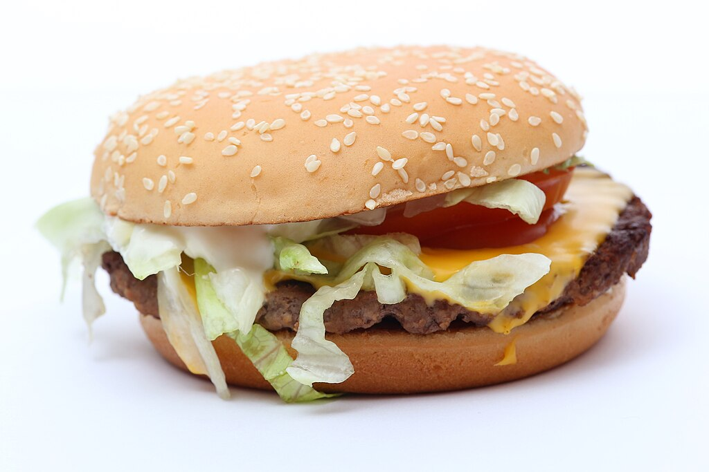

The United States of America
A wide and diverse country, the land of freedom and opportunities, where each region has a unique atmosphere.
A wide and diverse country, the land of freedom and opportunities, where each region has a unique atmosphere.
In America everything is "supersized” - even a "small” drink can become something no one in Europe would expect. Restaurant dishes often are so big, that two people could eat out of the same plate, or fast food chains always compete, who will offer a more extraordinary burger or dessert. And, if you think that no one could eat such a portion - you’re wrong.
Americans adore ice in drinks - if you order water in a restaurant, you will most likely get an almost full glass of ice with a splash of water. Even in winter, most people like soft drinks with a huge portion of ice, and coffee chains offer more types of cold coffee than hot. If you’re used to room-temperature drinks, it may be that in the US you’ll miss tea without ice.
When autumn comes, it looks like everything in America turns in to a pumpkin patch - pumpkin spice coffee, pumpkin-scented candles, pumpkin-flavoured pies and even pumpkin-scented hand soap. "Pumpkin spice” mania starts in September and takes over the whole country until Thanksgiving day. Even people, who say that they hate the pumpkin flavour, still buy at least one pumpkin drink - after all, it’s a tradition!

Inches, feet, pounds, gallons and miles - the US is one of the few countries, which still doesn’t use the metric system. That means, that foreigners often get lost trying to understand, exactly how much is a "quarter pound burger” or why there’s +80 degrees outside (in Fahrenheit!). Even Americans sometimes don’t understand their measurement system, but no one intends to change it.

In movies they’re depicted as secret clubs with weird traditions, but in reality they are a serious part of the culture of American students. Sororities and fraternities give students socials ties, throw parties and even help in their career path. It is true, that getting in is not always easy - there are special initiation rituals and even peculiar "christenings" that sometimes resemble movie scenes.

In the cities of USA public transport is often poor and distances are long, which is why getting around without a car is hard. Even if a shop is just a few minutes walk away, most Americans still will sit in to their car. There are even "drive-thru” pharmacies, banks and even churches! Without a car here you feel like you are without hands.

Americans celebrate Halloween especially loud - houses are decorated like they came from a horror movie scene, children are running around dressed in the strangest costumes, and adults throw themed parties. Additionally, is is candy heaven - the tradition of "Trick or treating” lets kids gather more candy than they eat in a year! Some neighbours even organise competitions, whose houses look the creepiest.

It is not just a football competition, but also one of the most important days of the year in America. Everyone gathers around the TV with snacks, and commercials during the breaks become even more interesting than the game. Additionally, add a spectacular show with the most famous celebrities - and you have a real American party. Even those, who don’t like sports, still watch just for the atmosphere.

Americans are famous for their openness and friendliness - even with strangers you can get a wide smile and a "Hey, how are you?”. Also, they often hug when greeting, and that for some Europeans seems too personal. However, in America it’s common - the more smiles and "small talk”, the better!
In America everything is adapted to be comfortable - 24/7 working shops, "drive-thru” restaurants and even an opportunity to order groceries with delivery straight to the car. Americans value speed and comfort, therefore most services are created, so people could do everything as simply and speedily as possible.

In America dates are written as a month-day-year format, which often misleads the rest of the world. For example, 07/04/2025 means July 4th, and not April 7th. That can cause a lot of confusion for travellers or people, who handle documents. Even international companies often come across with situations, when something is ordered or reserved with a wrong date.
Price tags in stores show the total without taxes, therefore at the checkout a surprise may be waiting for you. Depending on the state, you may have to from a few to a dozen percent more than you expected. And just like that, even the tip left on restaurant receipts is not included in the price, so the final amount is always higher than you planned.
It’s a time period during the end of the day, when bars offer discounts for drinks - the perfect time to relax after work and chat with friends. Americans really enjoy this tradition, and some bars even extend the "happy hour” up to several hours! If you’re in America and like to socialise - "happy hour” will definitely become your favourite part of the day.


Memorial Day, celebrated on the last Monday of May, honours the dead American soldiers - there are parades and flowers are put on the graves.

Independence Day, celebrated on the 4th of July, marking the independence of America with fireworks and parties.

Labour Day is celebrated on the first Monday of September, marking the workers and their input. This is a day off with outings and events.

Halloween, celebrated on October 31st, children dress in different costumes and gather candy.

Thanksgiving Day is celebrated on the fourth Thursday of November, thanking for the harvest and family, traditionally eating turkey.
Here’s some oftenly used phrases in the United States of America! These phrases will help you not to get lost during conversations. However, use them with cautions, because if you get carried away, it can come across as rude.
Meaning: of course, sure, certainly.
Usage: "You bet I'll help you with that project!"
It's an oftenly used answer to a question, confirming something or expressing enthusiasm for something.
A tip! Nenaudok šios frazės pernelyg oficialiose situacijose - ji labiau tinkama kasdieniame pokalbyje. Don't use this phrase in overly formal situations - it is more appropriate in everyday conversation.
Meaning: very, dramatic, too.
Usage: "He wore a suit to school. So extra!‟
It can be both a compliment and a phrase used slightly sarcastically.
A tip! If you want to praise, say it with enthusiasm. If you want to mock - you can use it with an eye-roll.
Meaning: (The Greatest Of All Time) the best.
Usage: "Messi is the GOAT of soccer!‟
It is used when talking about legendary athletes, performers or other exceptional people.
A tip! Don't confuse it with a factual goat - they are completely different things!
Meaning: If You Know, You Know.
Usage: "That inside joke... IYKYK.‟
It is oftenly used in social media, when wanted to emphasise something, that only a certain group of people would understang.
A tip! It is best suited in coversations with people, who already know the context.
Meaning: "Tell me the latest news."
Usage: "I heard you had a date. Spill the tea!‟
"Tea" in this case doesn't mean a drink, but intriguing information.
A tip! Use only in friendly situations - not everyone like to share their secrets.
Meaning: best, closest friend.
Usage: "I love you so much, bestie!‟
It is oftenly used in social media or friendly conversations.
A tip! If you call someone "bestie", make sure that they also consider you that - otherwise it may appear strange.
Meaning: fancy, chic, deluxe.
Usage: "She drinks fancy wine. So boujee!‟
This phrase comes from the word "bourgeois".
A tip! It can both be used with respect and sarcastically - it all depends from the tone!
Meaning: "good luck", "best of luck".
Usage: "Good luck in your play! Break a leg!‟
This saying comes from theatre traditions - it is said that wishing "good luck" directly is a bad sign.
A tip! Don't use this phrase amongst athletes - they really don't want to break a leg!
Meaning: comrade, pal, friend.
Usage: "Hey bro, wanna grab some food?‟
Even though oftenly used amongst guys, some girls also use "bro" as an informal address.
A tip! If you're talking with a stranger, it can sound too familiar - use wisely.
Meaning: guy, "bro", friend, comrade.
Usage: "Dude, that was awesome!‟
Differently than "bro", this word can be used also talking about situations: "Dude, it's so cold today!"
A tip! It can also be used even with anger: "Dude, what's your problem?"
Meaning: "Stop pressuring me".
Usage: "Stop pushing me! Get off my back!"
It's quite a harsh phrase, oftenly said when frustrated.
A tip! If you don't want to appear as rude, better to use a softer version, for example, "Can you give me a break?"
Meaning: spending time with friends.
Usage: "Wanna hang out later?"
It's a very often phrase amongst youngsters, used both with friends and potential partners.
A tip! If you want to invite someone, "hang out" doesn't necessarilly mean a romantic meeting - it can just be a friendly suggestion.
Meaning: "I don't know", "no idea".
Usage: "- What time does it start? - I dunno."
This phrase is very common in colloquial language, but informal.
A tip! Avoid it in official context - instead use the full "I don't know".
Meaning: roommate, flatmate.
Usage: "My roomie always eats my food!"
This phrase is oftenly used amongst students or people who live together.
A tip! It is only suitable then, when you are really sharing a place - otherwise, you can be not understood.
Meaning: offended, frustrated for nothing.
Usage: "He got salty because he lost the game."
It's a bit of a funny way to describe one's offended feelings.
A tip! If you use this incorrectly, you can really anger a person - be careful!.
Meaning: shocked, stunned, appalled.
Usage: "I just saw my ex with someone. I'm shook."
It is a strong emotional reaction, oftenly used on the Internet as a part of a meme.
A tip! If you want to add some drama - you can say "I'm so shook right now!"
Meaning: "my mistake", "I'm at fault".
Usage: "I forgot to text you back. My bad!"
It's quite an easygoing apology, suited for informal situations.
A tip! Jei situacija rimta, geriau sakyti "I'm sorry" - "my bad" gali atrodyti nepakankamai rimta. If the situation is serious, it's better to say "I'm sorry" - "my bad" may not seem serious enough.
Meaning: go crazy, to lose one's mind.
Usage: "He'll go bananas when you tell him."
This phrase is oftenly used when talking about an enthusiastic reaction.
A tip! If you're talking about anger, it's better to say "go nuts" or "lose it".
Meaning: to immediately fall asleep.
Usage: "I was so tired, I crashed at 10 PM."
Most commonly used when talking about sleep.
A tip! If you're saying "I'm gonna crash", normally it means "I'm going to sleep".
Meaning: You Only Live Once.
Usage: "Should I book that trip? YOLO!"
Dažnai naudojama kaip pasiteisinimas rizikingiems ar spontaniškiems veiksmams. Oftenly used as a excuse for risky or spontaneous actions.
A tip! Even though it's fun to say "YOLO", it's better not to get into trouble - not everything is worth this phrase.
Meaning: "I understand", to comprehend.
Usage: "- Math is hard! - Yeah, I get it."
Sometimes used with irony, when a person is really tired of hearing the explanations.
A tip! Jei nori parodyti užuojautą, gali sakyti "I totally get it.". If you want to show condolence, it's better to say "I totally get it".
Meaning: "me too", "agreed", "so do I".
Usage: "- I'm so tired today. - Same here."
It's a fast and simple way to show that you agree and experience the same.
A tip! If you want to be more polite, you can say "me too" or "I feel the same way".
Meaning: misfortune, downer, accident.
Usage: "- I forgot my wallet. - Oh, bummer!"
It's an inofficial way to express condolence for a minor problem.
A tip! Don't use it in overly serious situations - if someone tells a great misfortune, "bummer" may seem too easygoing.
Meaning: "have a great time".
Usage: "You'll have a blast during your vacation!"
The word "blast" here means an explosion - that emphasises the strong joy or happiness.
A tip! It is perfectly suited as a wish before an event, trip or party.
Meaning: to mess up, to make a mistake.
Usage: "I totally screwed up my exam."
It's an informal phrase, commonly used when talking about mistakes.
A tip! Jei kalbi oficialioje aplinkoje, geriau sakyti "I made a mistake", nes "screw up" gali skambėti per daug šnekamiškai. If you're talking in an official environment, it's better to say "I made a mistake", because "screw up" can sound too colloquial.


Here’s some things you should never do, if you want to blend in and avoid uncomfortable situations. Follow these tips to make a great impression!
| Don't: | Why? | What to do instead: | |
|---|---|---|---|
| Be Late | Americans value punctuality, especially in business meetings and reservations. | Be on time or even a bit earlier. |  |
| Careless Use of American Slang | Some words have multiple meanings and can be misunderstood. | Before using certain saying, find out their meaning. |  |
| Not Leaving a Tip | In the US tips are common and often a necessary share of the income of waiters and other service workers. | Leave a 15-20% tip. |  |
| Talk about Politics | Politics is a sensitive topics, which can cause strong reactions. | If you're not sure about the environment, avoid political discussions. | |
| Be Too Official | Americans often are informal even in a professional environment. | Be friendly and relax a bit, don't be too official. |  |
| Criticise Patriotism | Americans often are proud of their country, therefore criticism can be taken badly. | Respect their patriotic feeling, even if your point of view is different. |  |
| Humiliating the Fast Food Culture | Fast food is a big part of USA's culture, and many people like it. | If you don't like it, just don't say anything about it. |  |
American singer, also known as "The King of Rock 'n' Roll". He changed the history of music and became a cultural icon.
"Don't criticize what you don't understand, son. You never walked in that man's shoes."
A famous TV show host, businesswoman and philanthropist. She inspired millions with her famous "The Oprah Winfrey Show".
"Create the highest, grandest vision possible for your life because you become what you believe."

44th president of USA and the first African-American to hold this position. Known for his speeches, the pursuit of change and peace.
"Change will not come if we wait for some other person or some other time. We are the ones we've been waiting for. We are the change that we seek."